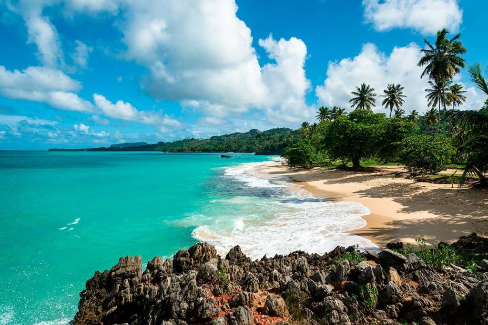

PLAYA RINCÓN, LAS GALERAS
Si quiere descontar y perder la noción del tiempo, Las Galeras debería ser su próximo destino. Se trata de un pequeño pueblo ubicado en la península de Samaná, en el extremo oriental de la isla, donde aún no se han instalado los resorts todo incluido y se conserva la esencia de República Dominicana.

CAYO LEVANTADO, SAMANÁ

Cayo Levantado es un sitio excepcional para practicar snorkel y descubrir la vida marina del Atlántico. Igualmente, es un lugar privilegiado para el avistamiento de ballenas jorobadas. Así que no lo dude y aproveche la oportunidad de contemplar a estos majestuosos mamíferos entre los meses de enero y marzo, cuando acuden a las aguas más cálidas de la zona del Caribe.
BAHÍA DE LAS ÁGUILAS
La bahía de las Águilas, en pleno Parque Nacional de Jaragua y dentro de la provincia de Pedernales, regala uno de los paisajes más espectaculares de República Dominicana. Belleza en estado puro con ocho kilómetros de playas de arena blanca salpicadas de gigantescas rocas y acantilados, con las aguas más cristalinas que pueda imaginar. La mejor forma de llegar hasta este rincón es en barca desde Cabo Rojo o con un todoterreno.